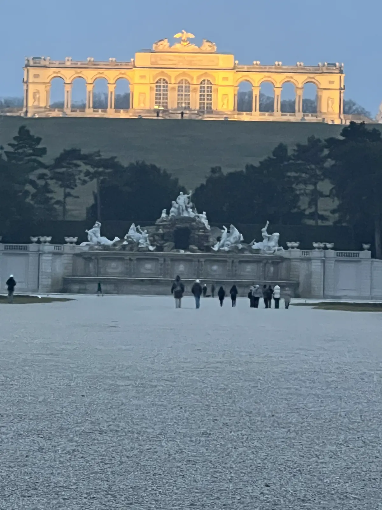
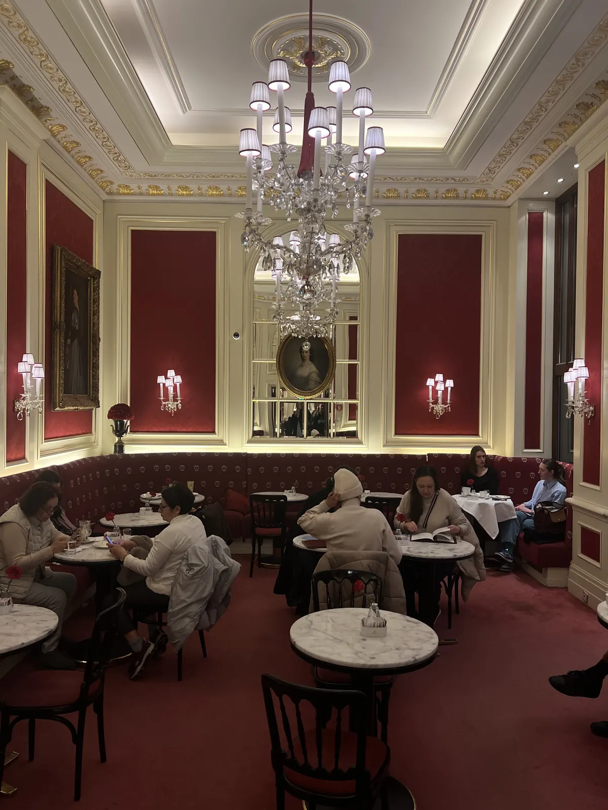
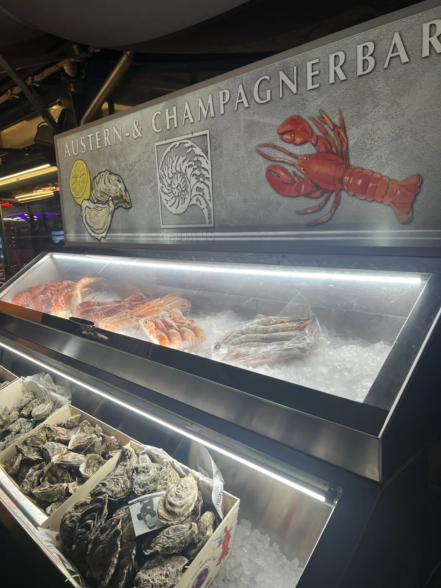
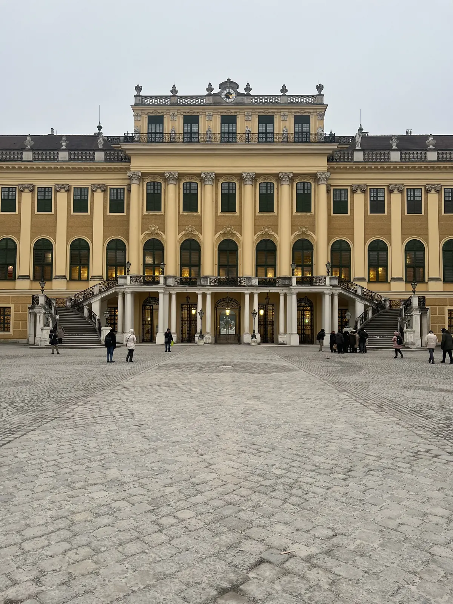
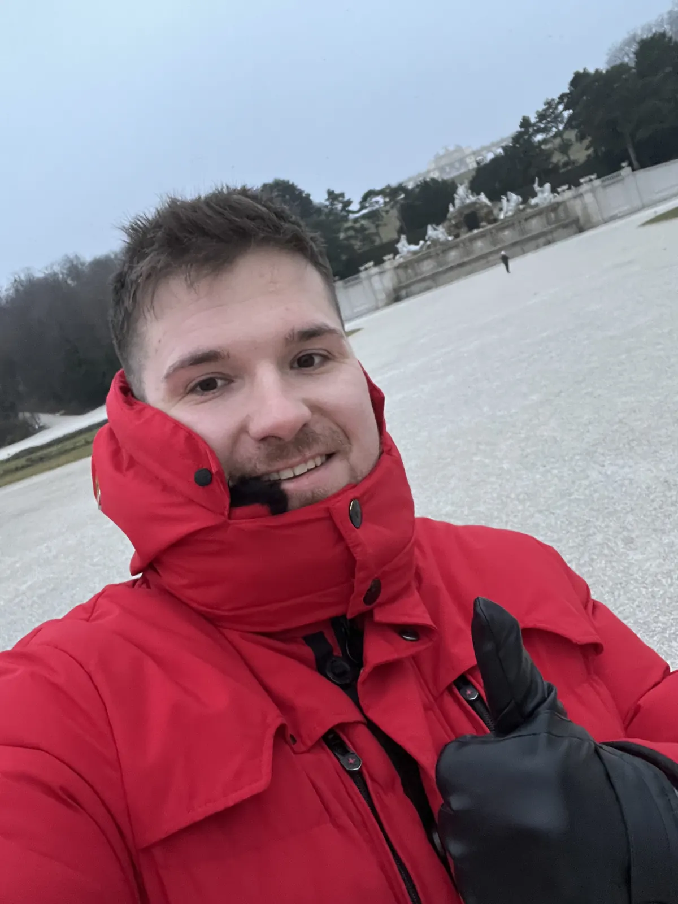
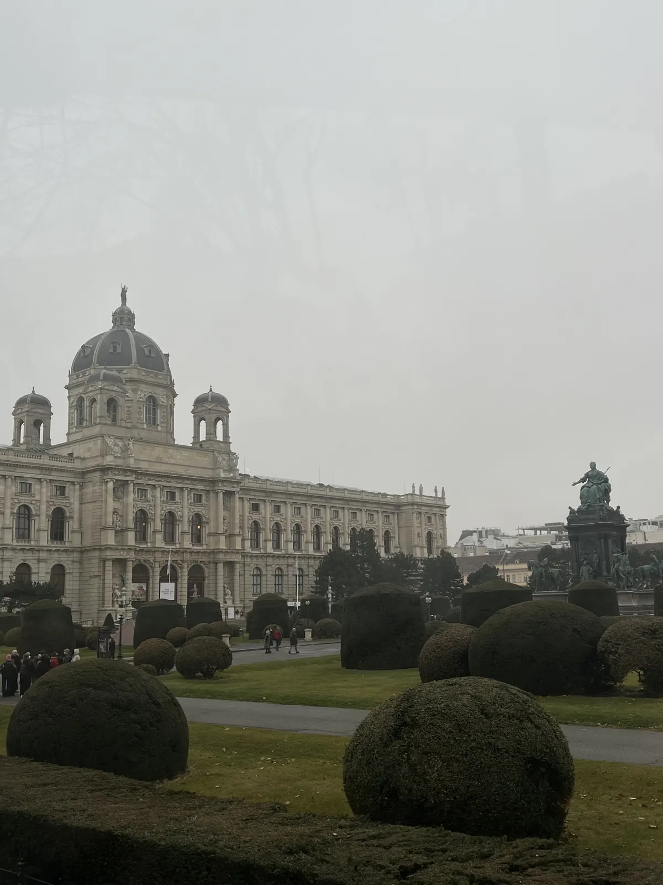

🇦🇹 Vienna Guide: 12 places – coffee house, Naschmarkt, Schönbrunn & Heuriger

Table of contents
Vienna is coffee-house culture, Habsburg splendour and cosiness. Prices and times are guidelines (2026).
🗺️ Map: 9 places at a glance
My story in Vienna
My tip: a morning in a coffee house is part of the deal – no rush, a newspaper and a melange. Then the Naschmarkt and a drink in the tiny Loos Bar at night. And if you have time: Bratislava is only about an hour away.
This guide contains affiliate links (GetYourGuide, Omio). If you book through them I earn a small commission – you never pay a cent more. Prices and opening hours change – double-check before you go.
🆓 Free things to do
4 places in Vienna you can enjoy without an entry fee or completely free (for some, only a part costs extra, e.g. a tower or museum):
At a glance
Getting there and around
You reach Vienna by train, flight or coach. Within the city subway, tram and feet are enough.
From Vienna-Schwechat airport you take the S-Bahn or the City Airport Train in about 20 to 30 minutes into the centre (check timetables and prices beforehand). In the city metro, tram and bus run at close intervals; day tickets and the Vienna Card (with discounts) are worthwhile.
The inner city (1st district) is small and easy to explore on foot. At night night buses run. Tap water in Vienna is excellent and comes from the Alps.
1. Must-sees
A coffee-house morning
No rush, a newspaper and a melange. Viennese coffee-house culture is UNESCO intangible heritage.
The Viennese coffee house is an institution: marble tables, Thonet chairs, newspapers on wooden holders, waiters in suits. You order a coffee – for example a melange (similar to a milky coffee) or a small brown – and get a glass of water with it. Nobody pushes you to leave; you can sit for hours.
Famous houses are Café Central, Café Landtmann, Café Sperl and Café Hawelka. Try a slice of cake or an apple strudel with it. The tip is usually about 5–10 per cent (round up).
Tip: Go on a weekday morning – then you get a seat without waiting.

Naschmarkt🆓 Free to experience
Then across the Naschmarkt – stalls, food, spices.
The Naschmarkt is Vienna’s best-known market: about 1.5 kilometres long, with about 120 stalls and restaurants. You find spices, olives, cheese, fruit, fish, sweets and international cuisine. On Saturdays there is also a large flea market at the end of the market.
Prices in the restaurants are often higher than in small bistros on side streets. Come in the morning for shopping and eat a breakfast or lunch there. Check whether all stalls are open; the market is closed on Sundays.
Tip: Come on Saturday for market and flea market together, but early.

Loos American Bar
An evening drink in Adolf Loos’s tiny bar. The interior is the star – cocktails and service vary.
The Loos American Bar is a small jewel: it was designed in 1908 by the architect Adolf Loos and measures only about 27 square metres. Dark wood, marble, mirrors and onyx make the space elegant and tight. Here you drink classic cocktails in a bar that has become a piece of architectural history.
The bar is very small – you may have to wait or come early in the evening. Prices are upscale. Check opening times beforehand.
Tip: Come early in the evening when there is still room.
St Stephen’s Cathedral🆓 Free to experience
St Stephen’s Cathedral, colloquially “Steffl”, is the landmark of Vienna: a Gothic cathedral with a colourful mosaic roof and a south tower about 136 metres high. You can climb the tower (about 343 steps) or take the lift in the north tower to the Pummerin, the great bell. Beneath the cathedral lie catacombs.
Admission and opening times change (check beforehand). Come early in the morning when the queues are short; the square in front is crowded in summer.
Tip: Climb the tower early in the morning, then the view is clear and the queue short.
Schönbrunn Palace & Gloriette🆓 Free to experience
Schönbrunn was the summer residence of the Habsburgs: a huge yellow palace with about 1,400 rooms, of which you see a part on tours. The palace park in French style with fountains, avenues and the Gloriette on the hill is extensive and free to enter. From the Gloriette you have a view of palace and city.
In the park also lies the Schönbrunn Zoo, which is considered the oldest existing zoo in the world. Plan half a day to a full day; you should reserve tickets for the palace online. Check prices beforehand.
Tip: Reserve the ticket online and visit the park in the late afternoon.


Hofburg & Spanish Riding School
The Hofburg was the centre of Habsburg power for centuries. Today it houses the Imperial Apartments, the Sisi Museum, the Treasury and the Spanish Riding School, where the famous Lipizzaner horses train. You can visit a performance or the morning training (book tickets early).
Plan half a day. Around the Hofburg lie the Heldenplatz and the Volksgarten – good places for a break.
Tip: Book tickets early and plan half a day.

Belvedere – Klimt’s “The Kiss”🆓 Free to experience
The Upper Belvedere is a Baroque palace in which Gustav Klimt’s famous painting “The Kiss” hangs. Works by Schiele, Kokoschka and others are added. The palace and the garden with a view of the city form a lovely ensemble.
Book tickets online; early in the morning or late in the afternoon it is quieter. The garden is partly free to enter. Check prices and times beforehand.
Tip: Come early in the morning before the rush.
Prater & Giant Ferris Wheel
The Vienna Prater is a large park with the amusement park Wurstelprater and the Giant Ferris Wheel of 1897, made famous by the film “The Third Man”. A ride takes about 15 to 20 minutes; from the top you see the city.
On foot or by bike you can follow the park far into the green area. In the Wurstelprater there are carousels, snacks and games. Check prices beforehand.
Tip: Ride at sunset, then the city glows.
2. Hidden gems & treats
Heuriger in Grinzing, Nussdorf & Neustift💎 Hidden gem
A Heuriger is a wine tavern in which winemakers pour their own wine. The tradition goes back centuries; in Vienna’s outer districts such as Grinzing, Nussdorf and Neustift am Walde you find them. A green bush above the door shows that wine is being served (“Ausg’steckt”).
You often help yourself at the buffet with spreads, roast pork, salads and cheese. Try a Grüner Veltliner or a Gemischter Satz. The trip takes about 30 minutes by tram or bus; many Heurigen open only in the afternoon and evening.
Tip: Go in the late afternoon, stay until sunset and take the tram back.
Hundertwasser House & Kunst Haus Wien💎 Hidden gem
The Hundertwasser House is a colourful residential building with crooked lines, mosaics, trees on the roof and irregular windows, designed by the artist Friedensreich Hundertwasser. You can see it from outside; the house is inhabited, interiors are not accessible.
Next door the Kunst Haus Wien shows Hundertwasser’s work. Nearby there are cafés and small shops. Plan an hour.
Tip: Come in the morning for photos without crowds.
Sachertorte, schnitzel & co.
Vienna means sweet and hearty: the Sachertorte (chocolate cake with apricot jam) from the Hotel Sacher or its competition at Café Demel, plus apple strudel and Kaiserschmarrn. As a main course the Wiener Schnitzel counts – breaded veal pounded so thin that it overhangs the plate.
The real Wiener Schnitzel is veal; pork schnitzel is called “Wiener Art”. Prices in tourist areas are high; small Beisln on side streets are often cheaper.
Tip: Eat the schnitzel in a Beisl off the main streets.
Day trip to Bratislava
The Slovak capital lies about an hour from Vienna and is easily reachable by train or ship (check timetables beforehand). Bratislava has a small old town, a castle above the Danube and a relaxed atmosphere. You find more in my Bratislava guide.
The trip is worthwhile if you have a second day and want to see something new.
Tip: Go early and eat lunch there.
What makes Austria special
For over 600 years the Habsburgs ruled from Vienna an empire that at times reached from Spain to Ukraine – until 1918.
📍 Save this guide to Google Maps
1. Quick: open as a route
2. Permanent: as your own map (2 minutes)
- Download the file with all pins (KML button below).
- Open Google My Maps → “Create a new map” → “Import” → choose the file.
- Done – every place sits exactly where it should, with number, tip and a link back to the guide.
- In the Google Maps app the map appears under “Saved” → “Maps”, also on the go.
⬇️ All pins for Google Maps (KML) ⬇️ Download place list (CSV)
3. Save one by one
Your plan
Day 1: Day 1 – Old town & coffee house
- Morning – coffee house, St Stephen’s
- Midday – Hofburg or Spanish Riding School
- Afternoon – Naschmarkt and Belvedere
- Evening – Loos Bar
Day 2: Day 2 – Schönbrunn & Heuriger
- Morning – Schönbrunn Palace, park, Gloriette
- Midday – Prater and Giant Ferris Wheel
- Evening – Heuriger in Nussdorf or Grinzing
FAQ
Can I combine Bratislava with Vienna?
Yes, only about an hour’s ride.
How many days do you need in Vienna?
Is the Vienna Card worthwhile?
🗺️ All places on my map → More guides and reels on Instagram: @hiddengem.atlas
Share this guide: On WhatsApp